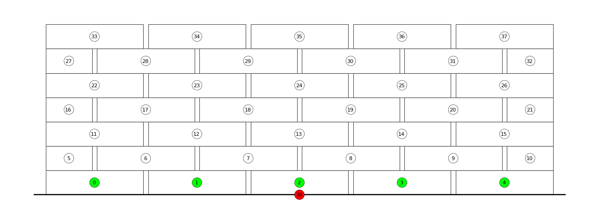

Visualise assembly information

"""Visualise information about an assembly in a plotter.
1. Load an assembly from a JSON file.
2. Set up a plotter
3. Plot vertex keys and red supports
4. Plot interface edges
5. Plot blocks
Note that the plotter produces views of the XY plane.
Therefore, if you want to see an elevation of the assembly, you have to transform it accordingly.
This will be changed in future versions of the plotter,
where it should be possible to provide a viewing direction for the plot.
If the assembly is rotated, make sure to use ``draw_blocks_bbox``,
rather than ``draw_blocks``.
"""
from __future__ import absolute_import
from __future__ import division
from __future__ import print_function
from math import pi
import compas_assembly
from compas.geometry import Rotation
from compas_assembly.datastructures import Assembly
from compas_assembly.datastructures import assembly_transform
from compas_assembly.plotter import AssemblyPlotter
# load an assembly from serialised data in a json file
assembly = Assembly.from_json(compas_assembly.get('assembly.json'))
# rotate the assembly to the XY plane
# note: make obsolete by providing a viewing axis to the plotter
R = Rotation.from_axis_and_angle([1.0, 0, 0], -pi / 2)
assembly_transform(assembly, R)
# plot the result
# - highlight the vertex of the support block(s)
# - highlight the neighbours of the support block(s)
# - display the block keys
supports = list(assembly.vertices_where({'is_support': True}))
facecolors = {}
facecolors.update({key: '#ff0000' for key in supports})
facecolors.update({nbr: '#00ff00' for key in supports for nbr in assembly.vertex_neighbors(key)})
plotter = AssemblyPlotter(assembly, figsize=(16, 6), tight=True)
plotter.assembly_plotter.defaults['vertex.fontsize'] = 10
plotter.draw_vertices(
facecolor=facecolors,
text={key: str(key) for key in assembly.vertices()},
)
plotter.draw_blocks_bbox()
plotter.show()